Dos capas: 2024 oficial (Eustat) y 2026 de oferta (scraping) · 252 municipios
Y en 188 municipios no hay anuncio: «sin dato», no «asequible».
Primero la capa oficial de 2024, que es el ancla. Después, qué dice el precio publicado en 2026.
Los alquileres tienen outliers y la media los sigue.
El que usa la literatura de emancipación.
16-29 queda legacy: 42,9 % de mediana, no comparable.
El indicador no es nuestro. Lo que aportamos es calcularlo municipal y decir dónde no se puede calcular.
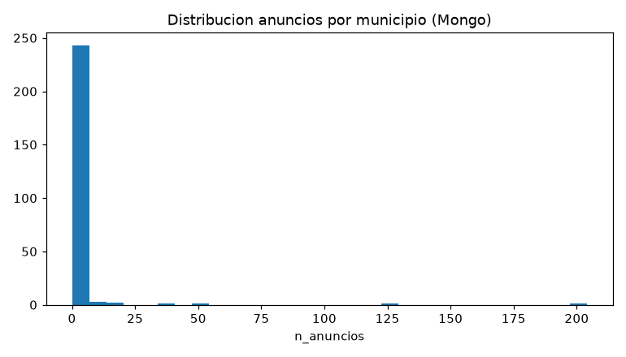
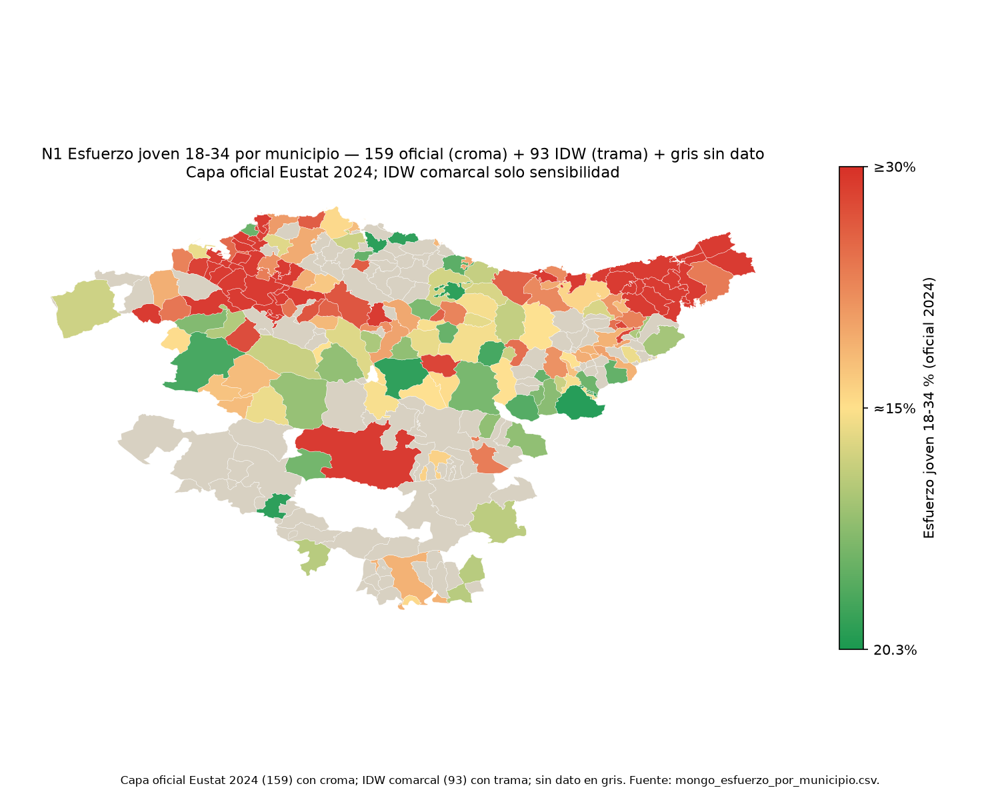
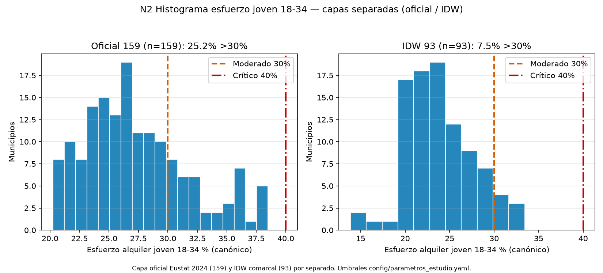
40 de 159 superan el 30 % (25,2 %).
Con IDW la mediana baja a 25,37 %; los que superan son 47 de 252.
Los intervalos se solapan: no vendemos un podio, vendemos un umbral. El ancho es dispersión de precios 2026 sobre el nivel de 2024, no error del dato Eustat.
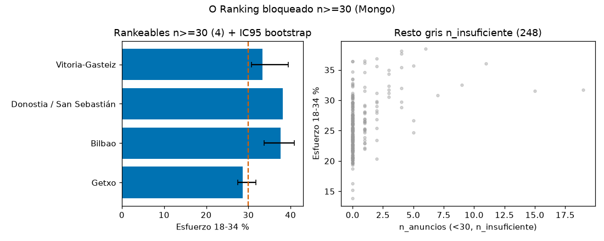
=30">| Municipio | n 2026 | Esfuerzo 2024 | Precio 2026 | Paro 2024 |
|---|---|---|---|---|
| Bilbao | 68 | 37,69 % | 1.687,50 € | 9,71 % |
| Donostia | 58 | 38,17 % | 2.000,00 € | 5,82 % |
| Getxo | 39 | 28,60 % | 1.350,00 € | 6,40 % |
| Vitoria-Gasteiz | 37 | 33,37 % | 1.300,00 € | 8,89 % |
Cada columna va fechada porque viene de una capa distinta: el esfuerzo es alquiler oficial, el precio es oferta publicada y el paro es Udalmap.
Es la única tabla donde las dos capas se tocan. Aquí sí hay muestra; en el resto del mapa, no.
45 en cuarentena fuera de Euskadi · 10 excluidos por el propio pipeline (900 m², 9.500 €) · 29 sin precio.
| Portal | n | €/mes | €/m² |
|---|---|---|---|
| fotocasa | 152 | 1.432 € | 15,36 |
| pisos | 60 | 1.500 € | 16,67 |
| realtyapi | 75 | 1.690 € | 19,43 |
Medianas por portal. Realtyapi es un 26 % más caro por m²: no se puede prometer que los tres midan lo mismo.
Numerador: precio de anuncio. Denominador: salario joven OVJ 2024 × IPC INE 1,099. No es alquiler efectivo.
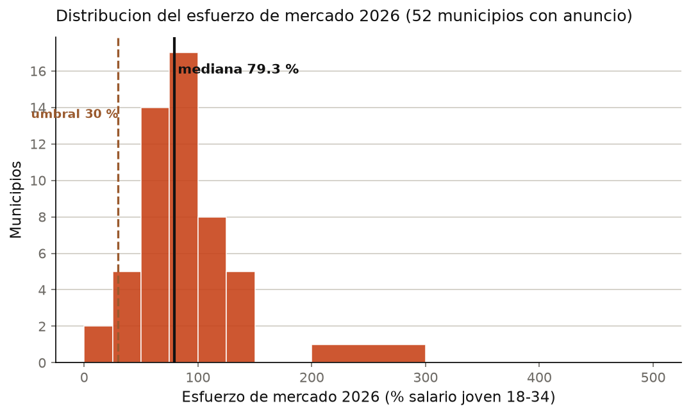
El 78,6 % se defiende como nivel agregado, no como mapa municipal. El gris es falta de dato, no precio bueno.
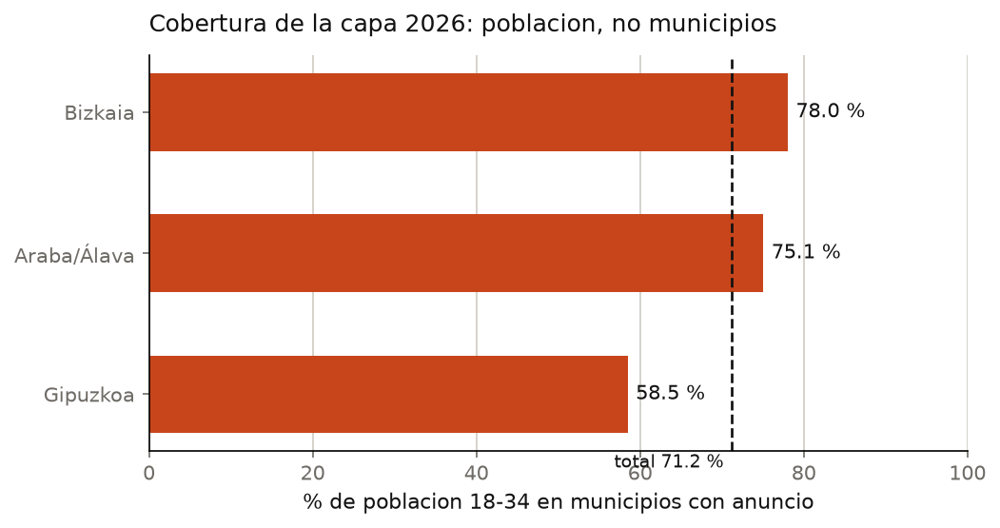
| €/m²·mes 2024 | SERPAVI | Eustat |
|---|---|---|
| Bilbao | 11,60 | 11,51 |
| Donostia | 14,90 | 13,99 |
| Getxo | 11,40 | 11,34 |
Publicado en validacion_portales_2026.csv: la sensibilidad se enseña, no se esconde.
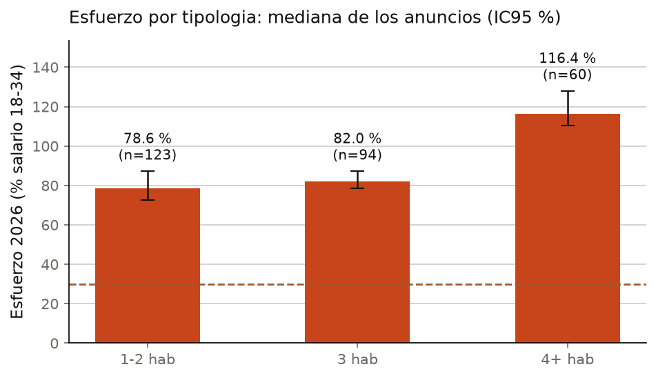
| Tipo | n | Esfuerzo 18-34 |
|---|---|---|
| 1-2 hab | 123 | 78,6 % |
| 3 hab | 94 | 82,0 % |
| 4+ hab | 60 | 116,4 % |
La vivienda de 4+ habitaciones sube a 116 %: el precio del anuncio crece más que el salario joven. Es la mediana de los anuncios, no una media de medianas municipales; el CSV municipal conserva el ponderado (80,4 / 85,2 / 120,1) para que se vea el efecto del estimador.
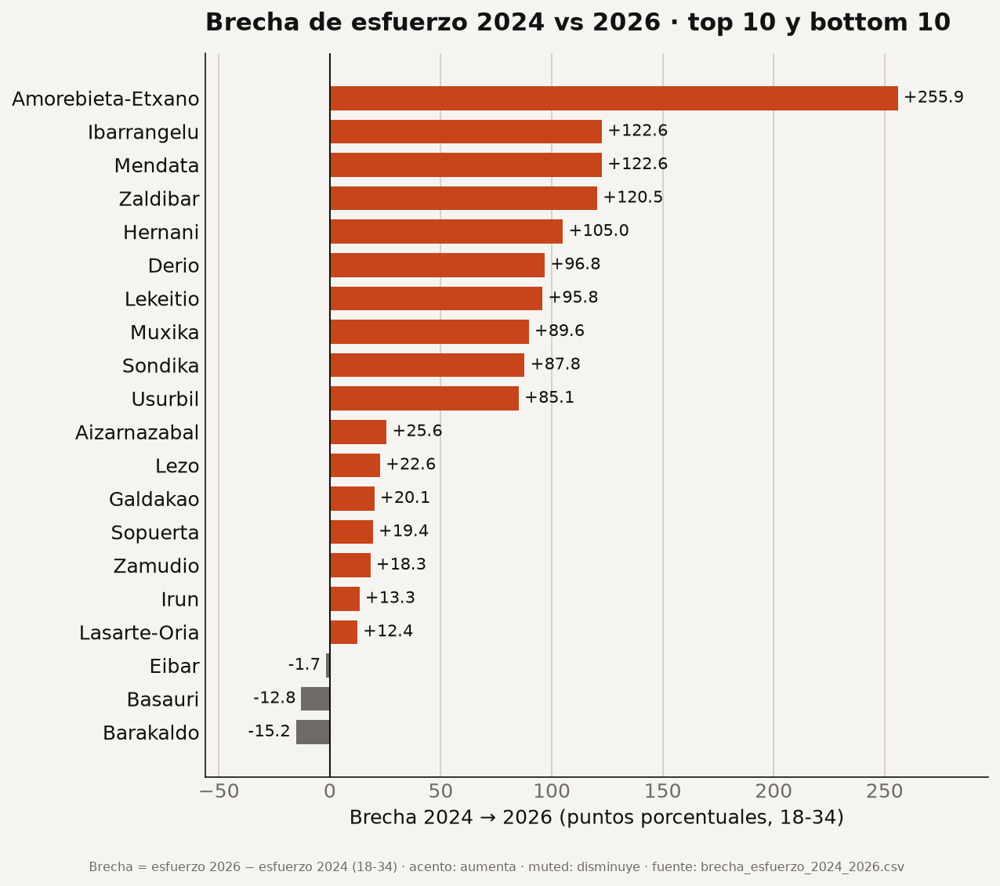
En el gráfico van en gris; solo Donostia sale en color, que es la única con muestra (n=58).
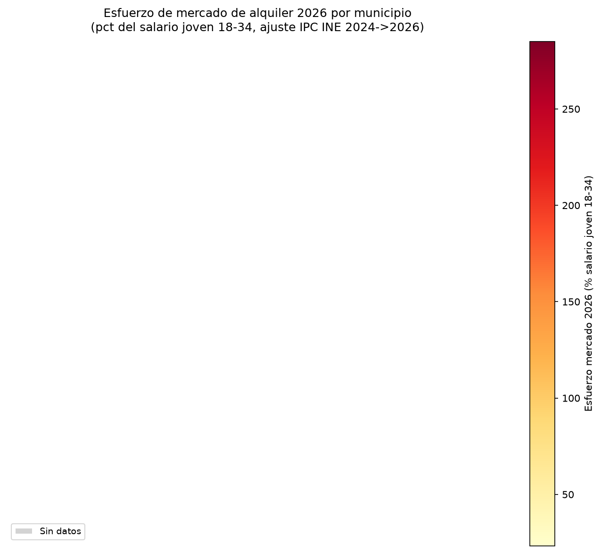
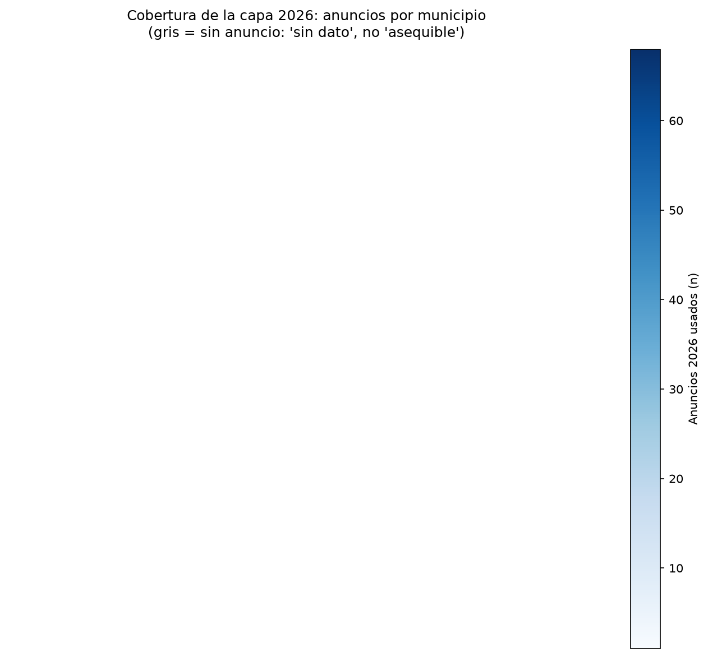
La misma geografía del esfuerzo canónico, leída sobre precio publicado. Y la segunda capa dice dónde ese color no existe: 50 municipios, 71,2 % de los jóvenes, 43 sin mediana.
python scripts/run_pipeline.py --fase silver,quality,gold → 183/183 silver · 63/63 gold byte a byte · 40 nodos en el DAG.
Todo lo que se cita esta tarde sale de gold: 8 CSV mongo_*, 8 análisis de la capa 2026 y 29 figuras. Ninguna cifra está tecleada en la presentación.
Se consulta entero y cambia poco: demografia{}, empleo{}, demanda_social{}.
Crece cada día: ubicacion.codigo_ine → municipios._id, con equipamiento[] e historico_precios[].
15 colecciones vivas: municipios 252 · anuncios 594 · alquiler_municipal 252 · indicadores 252 · etxebide_solicitudes 5.040 · etxebide_promociones 406.
{
_id: ObjectId("…"),
codigo_ine: "48020",
nombre: "Bilbao",
tier: "A",
demografia: { pob_total: …, pct_18_34: … },
empleo: { paro_16_64: … },
demanda_social: { solicitudes: …, anio: 2024 }
}
Sin anuncios dentro del municipio: duplicaría datos y rompería el límite de 16 MB. El codigo_ine a 5 dígitos es el campo común; nunca el nombre.
Tipos BSON: Decimal128 para dinero, int para conteos, date para fechas, 2dsphere para geo.
Idempotencia real: upsert + índice único (portal, id_anuncio) + descarte por SHA.
| Filtro 20069 + larga + ≤1000 | Docs | Claves |
|---|---|---|
| Sin índice · COLLSCAN | 594 | 0 |
| Con ESR · IXSCAN | 1 | 1 |
Índice {ubicacion.codigo_ine, modalidad, precio_eur} — orden ESR: igualdad, orden, rango. 24 índices en total.
Gobernanza TODO OK · gate offline OK · FAIL 07 es un dato real, no un test roto.
Con más datos, lo primero sería subir la muestra de los 57 Tier C y separar temporal de larga en todo. Excepción declarada: HDFS guarda solo raw (352); los procesados se quedan en local por indicación de la profesora.
En la mayoría del territorio, justo; en las capitales, no; y en 188 municipios no lo sabemos.
Gracias. Abrimos el código, los datos y el CSV de cada cifra de esta charla.
1. ¿Qué se consulta junto? Municipio + demografía + empleo + demanda social → embebido.
2. ¿Qué cambia? Anuncios y precios → colección propia.
3. ¿Arrays sin límite? historico_precios[] acotado; anuncios fuera.
4. ¿Fotografía histórica? Precio por fecha dentro del anuncio.
5. ¿Relaciones? Municipio 1:N anuncios; 1:1 alquiler/indicadores; N:M promociones.
6. ¿Campo común? codigo_ine a 5 dígitos, nunca el nombre.
7. ¿Tipos BSON? Decimal128 para dinero, int para conteos, date para fechas, 2dsphere para geo.
Consultas: igualdad, dot notation, $all, $elemMatch, $size, $exists, $type, regex, comparación, $and, $or, proyección, sort/limit, paginación.
CRUD: insert_one, insert_many, find, update_one, find_one_and_update, upsert, $unset/$rename/$pull, bulk_write, delete_one/many.
Cada operación se comprueba por código: inserted_id, matched_count, modified_count, deleted_count.
Nada se edita a mano en Mongo: la carga es staging + backup + rename atómico.
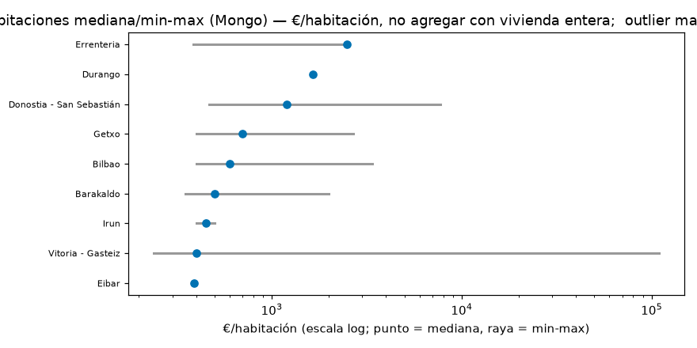
201 anuncios en 9 municipios.
Solo Bilbao (96) y Donostia (66) sostienen comparación firme; el resto es indicativo.
No se agregan con vivienda entera: son productos distintos.
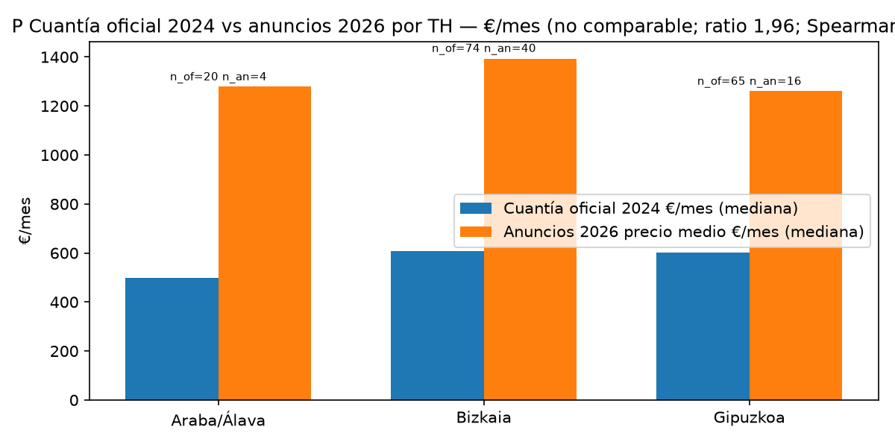
El anuncio mide oferta publicada; el oficial, alquiler efectivo. Se usan para cosas distintas y no se mezclan en el indicador.
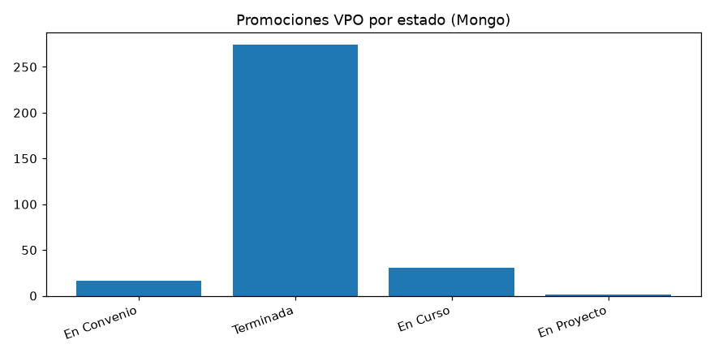
406 promociones en 77 municipios.
Flujo de terminadas: 251/252 municipios; Usansolo sin dato.
El stock no es público: no se inventa.
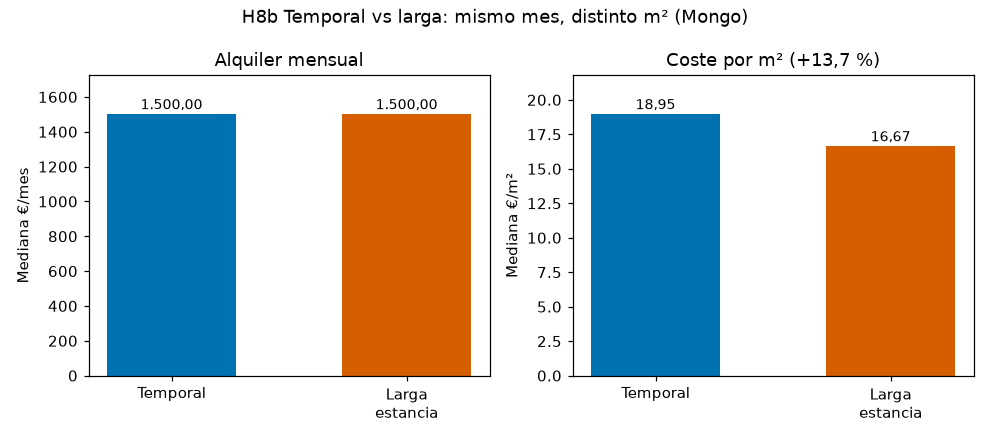
Misma mediana mensual (1.500 €), pero el temporal es más pequeño: 80 vs 92,5 m².
Por m², el temporal es +23,2 % en Fotocasa y +13,7 % en el total (18,95 vs 16,67 €/m²).
Por eso no se mezclan las modalidades en el indicador.